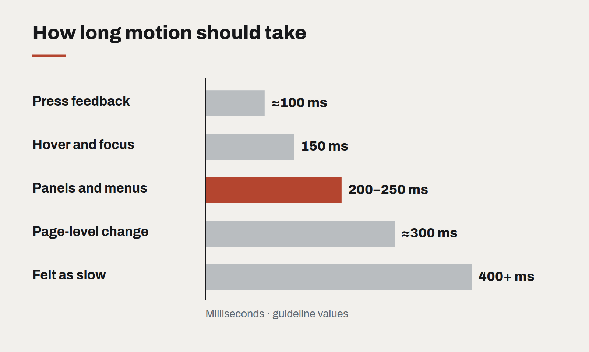

Motion with a job to do
Animation is either explaining something or getting in the way. A short guide to the motion that earns its milliseconds, and the kind that should be cut.

Motion in interfaces tends to arrive in two waves. The first comes early in a project, when a designer adds transitions to make a prototype feel alive. The second comes late, when someone decides the product needs more "delight" and adds bounces, parallax and animated illustrations. The first wave is usually useful. The second usually is not.
The difference is whether the motion has a job. Good interface animation explains something the user would otherwise have to work out: where a thing came from, where it went, what just changed, what is still happening. Motion without a job is decoration, and decoration that moves is decoration that delays.
Four jobs worth doing
- Continuity. When a panel slides in from the right, the user learns that it lives to the right and will go back there. When a card expands into a detail view, the user knows the detail belongs to that card. This is the most valuable use of motion, and the most commonly done badly.
- Feedback. A button that responds the instant it is pressed, a row that briefly highlights after it is saved, a field that shakes gently when the input is invalid. These confirm that an action registered.
- Attention. One element moving on an otherwise still screen draws the eye reliably. Used sparingly — a new notification, a changed total — it guides the user to what matters.
- Waiting. Progress indicators and skeleton screens tell the user that work is happening and roughly how much remains. They make waits feel shorter and, more importantly, make them feel intended.

Rules we hold to
- Fast. Most interface transitions should complete in 150 to 250 milliseconds. Anything longer than 400 milliseconds is noticed as slowness, not smoothness.
- Interruptible. A user should never have to wait for an animation to finish before acting. If they click during a transition, the interface should respond at once.
- Consistent. Define a small set of durations and easing curves as tokens, the same way you define colours. When every component moves with the same rhythm, the product feels coherent.
- Respectful. Honour the operating system's reduced-motion setting. For some users, parallax and large movements cause genuine discomfort. Provide a version where things simply appear.
- Cheap to render. Animate opacity and transform, which the browser can hand to the graphics card. Animating layout properties makes pages stutter on ordinary phones.
What to cut
Cut motion that plays on every page load, that repeats on a loop while the user is reading, or that exists only because a library made it easy. Cut scroll-triggered animations that hide content until the user scrolls to exactly the right place. Cut anything that makes a user watch before they can do.
The best compliment an interface animation can receive is that nobody mentions it. Users simply find the product easy to follow — and never notice that motion is the reason why.
Designing interfaces for answers that might be wrong
Traditional software is either right or broken. AI features are usually right, sometimes wrong, and always confident-sounding. The interface has to carry the uncertainty the model won't.
A design system for teams without a design team
Most organisations that need consistency cannot justify a dedicated design-system group. A small, opinionated kit — and the discipline to keep it small — gets them most of the way.
Let the type do the heavy lifting
Illustration budgets shrink and stock photography all looks the same. Typography is the one brand asset that appears on every screen — and most design systems still treat it as an afterthought.